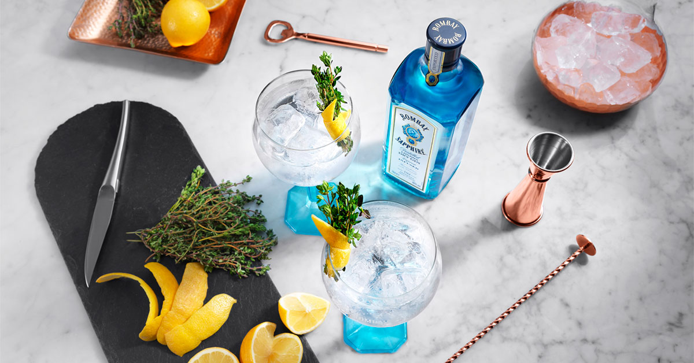

Forside Sund & smuk Opskrifter Opskrift: Gin og tonic med et twist af Bombay Sapphire
I mange år har gin været en klassiker i drinks- og cocktail-repertoiret, men i løbet af de seneste par år er den velkendte spiritus steget stødt på trendkurven.
Siden Bombay Sapphire blev udviklet i 1986, har den karakteristiske blå flaske været kendt over hele verden – og med god grund. Bombay Sapphires generøse smag af frisk enebær med en let krydret afrunding gør den nemlig ideel til klassiske gin-cocktails.
Bombay Sapphires komplekse og aromatiske smag stammer fra ti nøje udvalgte, håndplukkede krydderier, blomster og urter. Hvor mange ginproducenter koger de smagsgivende ingredienser direkte i alkohol, udvindes urternes aromaer i Bombay Sapphire ved inddampning, hvilket bidrager til en friskere smag og et mere nuanceret udtryk.
Den klassiske gin & tonic er en højtelsket favorit hos mange, og vi sætter nu fokus på den opgraderede udgave af klassikeren – “gin & tonic with a twist”! For selvom en gin & tonic med citron eller agurk smager skønt, findes der også mange andre lækre måder at spice den kendte drink op på. Bombay Sapphire er med sin let krydrede smag af enebær ideel til denne sommers mange gin & tonics – også dem med et tvist.
1. 5 centiliter gin
2. 10 centiliter tonic
3. Lime eller citron
4. Isterninger
Tip! Top din gin & tonic med friske krydderurter og krydderier som for eksempel en kvist timian, rosmarin, mynteblade, hele peberkorn eller lignende. Ikke alene ser det super flot ud, det giver også det ekstra lille twist på smagsfronten, der lader din yndlingsdrink nå nye højder.
1. Kom is i glasset og pres saften fra limen ud i glasset og kør limen rundt på glassets kant
2. Bland alle ingredienserne, rør let og tilsæt is
3. Pynt med en ekstra skive frisk lime og server